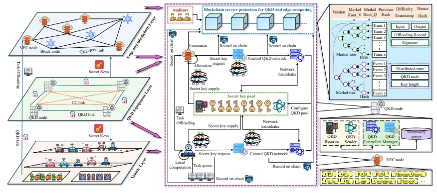
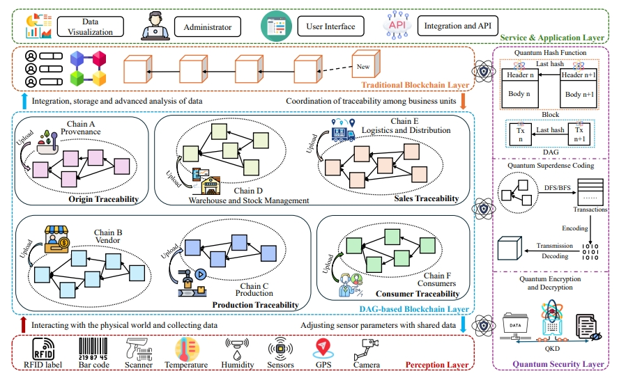
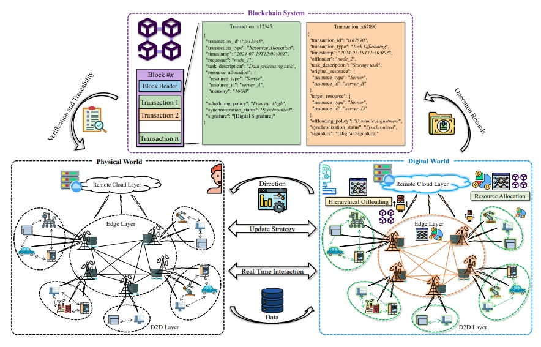
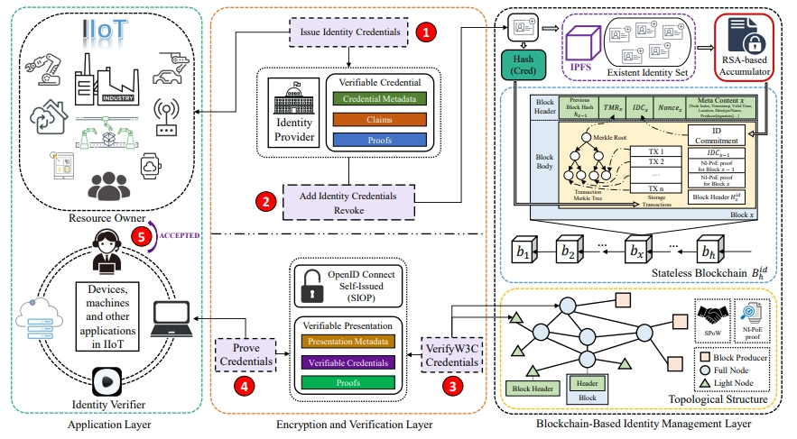
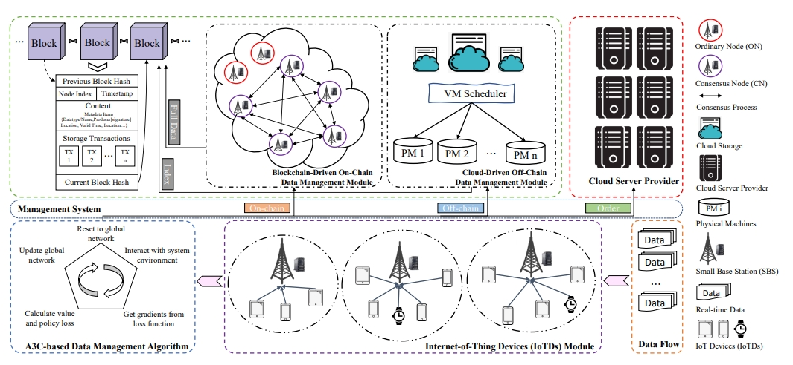
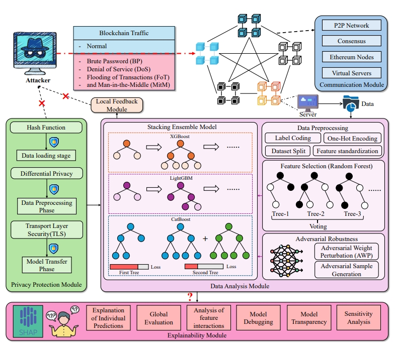
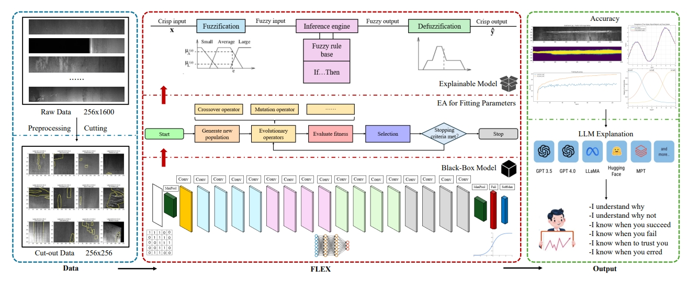
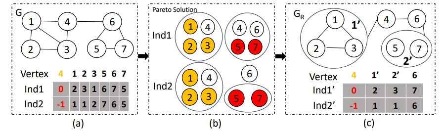
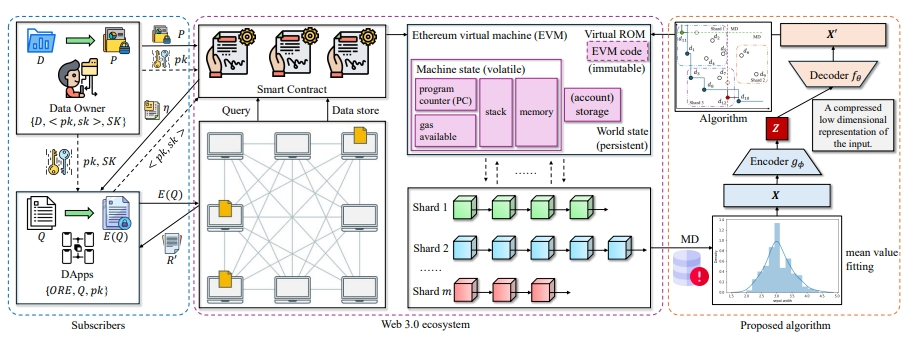

I will be joining [University Name] as a faculty member in [Department] starting [Month, Year]. I received my Ph.D. training at the Department of Industrial and Systems Engineering, The Hong Kong Polytechnic University, where my research focused on quantum intelligence and edge computing, Industrial IoT identity and security, and AI agent decision-making and traceable intelligence.
My work has been published in leading venues including IEEE Transactions on Vehicular Technology, IEEE Internet of Things Journal, IEEE Transactions on Cloud Computing, IEEE Transactions on Industrial Informatics, Computer Networks, and Pattern Recognition Letters.
I am always happy to hear from students and collaborators with shared research interests — please see the Prospective Students section, or simply drop me an email.
News
- Oct 2026! I have accepted a faculty offer and will join [University Name] as [Position Title] starting [Month, Year].
- Oct 2026N Personal academic homepage redesigned.
- 2025C Our paper “Privacy-Preserving and Resilient Skyline Querying in Sharded Blockchain Networks for Web 3.0” was accepted by DASFAA 2025.
- 2024J Our paper “On-Chain and Off-Chain Data Management for Blockchain–Internet of Things: A Multi-Agent Deep Reinforcement Learning Approach” was published in the Journal of Grid Computing.
Research Interests
- Quantum Intelligence and Edge Computing. Intelligent resource orchestration, adaptive collaboration, and optimization-driven decision-making in quantum–classical heterogeneous computing environments.
- Industrial IoT Identity and Security. Decentralized identity management, trustworthy authentication, and dynamic security governance for Industrial Internet of Things (IIoT) systems.
- AI Agent Decision-Making and Traceable Intelligence. Decision provenance, behavioral traceability, and verifiable autonomous decision-making for intelligent agents.
Education
- Ph.D. — Department of Industrial and Systems Engineering,
The Hong Kong Polytechnic University, Hong Kong
Advisor: Prof. Carman K. M. Lee - Visiting Ph.D. Student — School of Computing and Information Systems,
The University of Melbourne, Australia
Advisor: Prof. Rajkumar Buyya - M.Sc. — Department of Computing,
The Hong Kong Polytechnic University, Hong Kong
Advisor: Prof. Jiannong Cao - B.Eng. — School of Computer Science and Technology, Anhui University, Hefei, China
Work Experience
- Research Assistant — The Hong Kong Polytechnic University, Hong Kong
- Senior Project Assistant — The Hang Seng University of Hong Kong, Hong Kong
Publications









† Authors contributed equally to this work. * Corresponding author.
Teaching
Course information will be updated after I officially start my faculty position.
Prospective Students
I am always looking for self-motivated students (Ph.D., M.Sc., and research assistants) interested in quantum intelligence and edge computing, Industrial IoT identity and security, and AI agent decision-making and traceable intelligence. Candidates with backgrounds in computer science, industrial engineering, or related disciplines are encouraged to apply.
If you are interested, please email me your CV and transcripts with the subject line “Prospective Student Application”. Detailed recruitment plans will be announced once my faculty position officially begins.
Academic Services
Reviewing and program committee records will be added soon.
Honors & Awards
- National Encouragement Scholarship
- Meritorious Award, Mathematical Contest in Modeling (top 8%)
- Second Prize, Academic Science and Technology Award
- Third-class Scholarship for Excellent Study
- Third Prize, 13th International Water Robot Competition
- Honorable Mention, School-level Mathematical Contest in Modeling, Anhui University
Contact
Address
DE407, Lui Che Woo Building, The Hong Kong Polytechnic University,
Hung Hom, Kowloon, Hong Kong